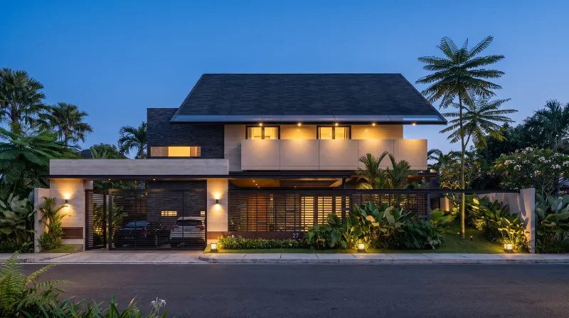
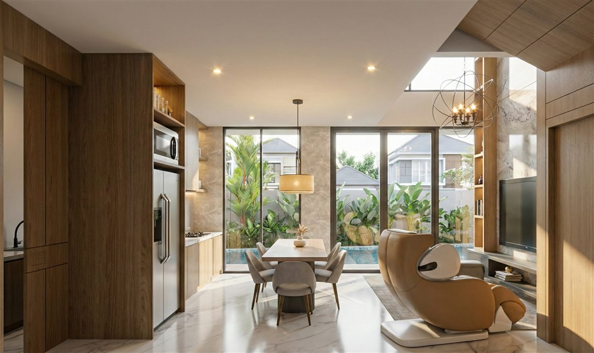
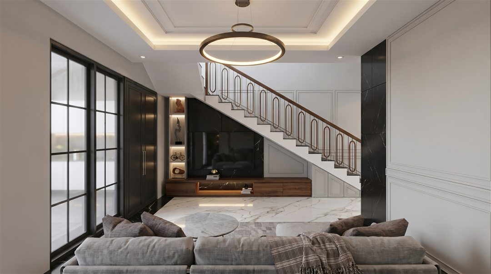
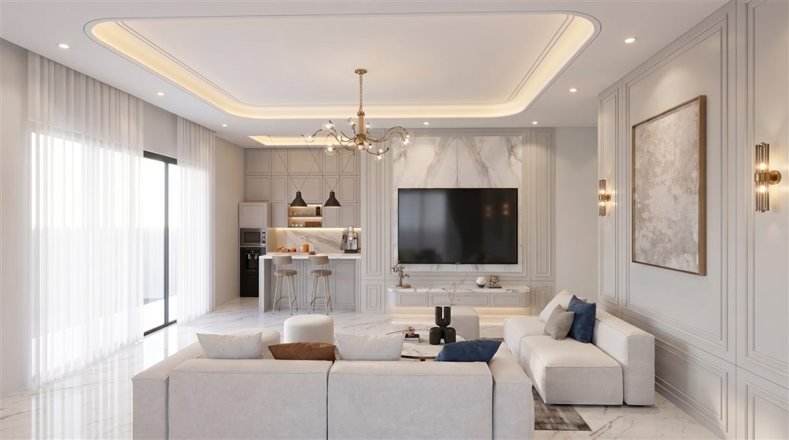
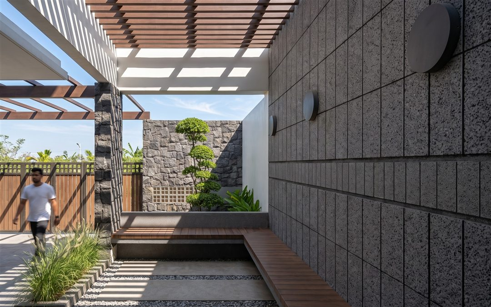
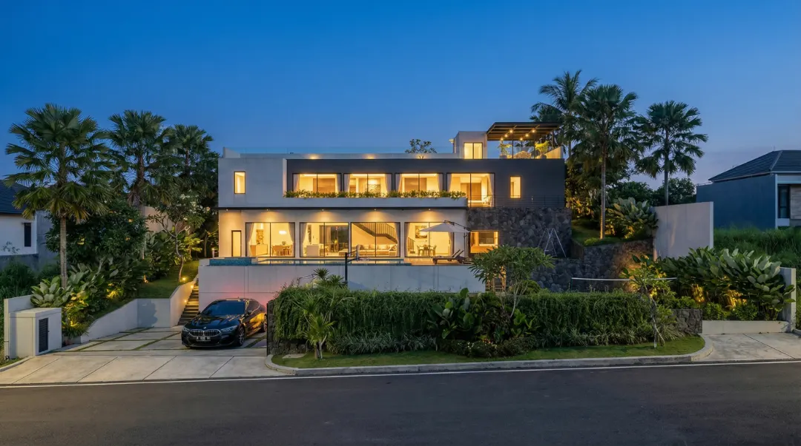

Memilih Gaya Rumah yang Sesuai Lahan dan Gaya Hidup
Contoh ringkasan: cara menimbang kebutuhan keluarga, kondisi lahan, dan anggaran sebelum menentukan gaya desain.
Tulisan Terbaru

Contoh ringkasan: cara menimbang kebutuhan keluarga, kondisi lahan, dan anggaran sebelum menentukan gaya desain.

Contoh ringkasan: perbedaan cakupan Standard, Premium, dan Profesional, dan bagaimana memilih yang paling pas.

Contoh ringkasan: mengapa denah disusun dari cara penghuni hidup sehari-hari, bukan dari tren sesaat.

Contoh ringkasan: tekstur material apa adanya sebagai bagian dari estetika, dan hal yang perlu diperhatikan perawatannya.

Contoh ringkasan: data lahan, kebutuhan ruang, dan perkiraan anggaran yang membantu konsultasi awal lebih cepat.

Contoh ringkasan: perbedaan render dan gambar kerja, dan bagian mana yang dipakai tukang dan kontraktor.
Tidak ada tulisan yang cocok.
Coba kata kunci lain atau pilih kategori yang berbeda.
FAQ

Ya. Konsultasi awal gratis lewat WhatsApp. Ceritakan kebutuhan, lahan, dan anggaran Anda, lalu kami bantu menentukan paket yang sesuai.
Bisa. Konsultasi dapat dilakukan lewat WhatsApp, Zoom, atau kunjungan langsung, menyesuaikan kondisi proyek Anda. Kami melayani klien di seluruh Indonesia.
Paket Standard sekitar 15 hari, Premium 25 hari, dan Profesional 30 hari. Rinciannya ada di halaman Layanan dan Harga.
Tergantung paket: 2 kali untuk Standard, 6 kali untuk Premium, dan 8 kali untuk Profesional.
Setelah ruang lingkup pekerjaan dan biaya disepakati, Anda melakukan pembayaran awal untuk memulai proyek. Langkah lengkapnya ada di bagian Proses Pemesanan pada halaman Layanan dan Harga.